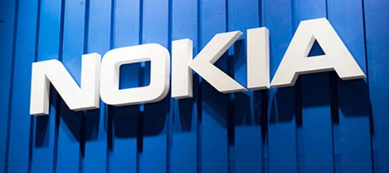

Na década de 1970, todos os escritórios tinham máquinas de escrever.
Se quisessem copiar um documento, as pessoas dependiam do mimeógrafo e
do papel carbono. Enquanto alguns de nós nunca ouvirmos falar nesses
equipamentos do mundo moderno, eles eram a base dos escritórios da década
de 1970. Naquela época, poucas pessoas haviam ouvido sobre os microcomputadores,
mas dois jovens acreditaram que essas máquinas eram o futuro. Em 1975, Bill Gates
e Paul Allen, fundaram a Microsoft com o objetivo visionário de instalar
um computador em cada mesa de trabalho e em cada casa. Embora poucas
pessoas naquela época acreditassem nessa visão, hoje, sabemos que eles
estavam certos.
O jovem Bill Gates observando Paul Allen programar
A empresa de Bill Gates e Paul Allen parecia estar
no caminho certo desde sua fundação, já que não demorou muito para
os criadores começarem a colher os frutos da iniciativa. No final
do ano de 1976 a empresa fechou com o balanço de incríveis $16,005 dólares
de receita para a época; no mesmo ano o nome "Microsoft"
já seria registrado oficialmente como uma marca.
Ler mais...
A empresa entrou no ramo de sistemas operacionais em 1980
com sua própria versão do Unix, chamada Xenix, mas em 1984
uma nova página foi escrita na história quando a Microsoft
lançou o Windows.
Entre seus produtos de software mais conhecidos
também merecem destaque a linha de aplicativos para escritório
Office e o navegador Internet Explorer, que agora deu lugar ao Edge
Já entre seus principais produtos de hardware modernos estão os
consoles de videogame Xbox, a série de tablets Surface e os smartphones
Microsoft Lumia. Outro ponto de destaque da empresa no setor de produtos
foi em 2013, quando a Microsoft comprou a divisão de dispositivos
e serviços da empresa finlandesa Nokia

Imagem retirada Google
Em 1979, a IBM procura um sistema operacional para seu novo
computador e contrata a Microsoft para o serviço.
Porém, os jovens Gates e Allen se encontraram em uma situação
arriscada porque não possuíam um sistema completo.
A solução foi comprar o Q-DOS da Seattle Computer
Products por 50 mil dólare.
A evulução da Microsoft se de uma for polêmica para muitas pessoas.
Mesmo que tenha desenvolvido projetos e sistema operacionais extremamente
eficientes e inovadores, a empresa por varias vezes foi acusada de realizar
práticas ilegais com o objetivo de criar e manter uma exclusividade no ramo dos softwares, práticas sem exageiros
para alcançar o sucesso.
VOLTA AO TOPO